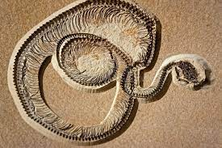
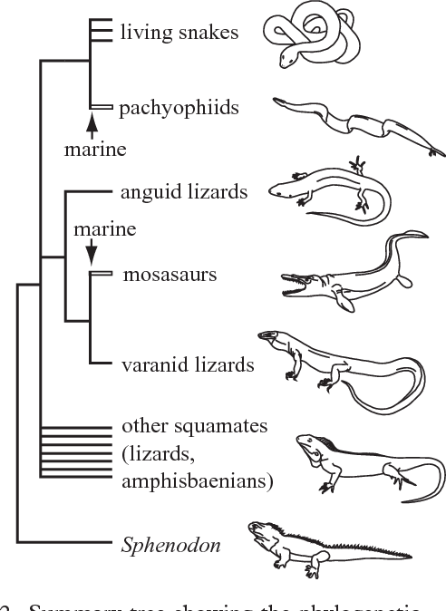
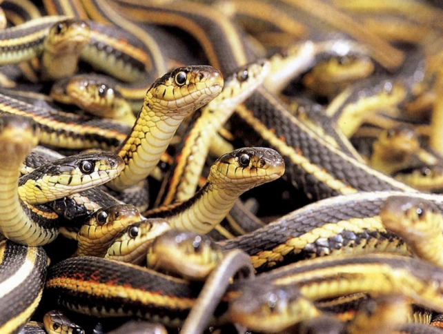
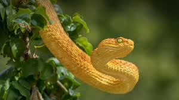
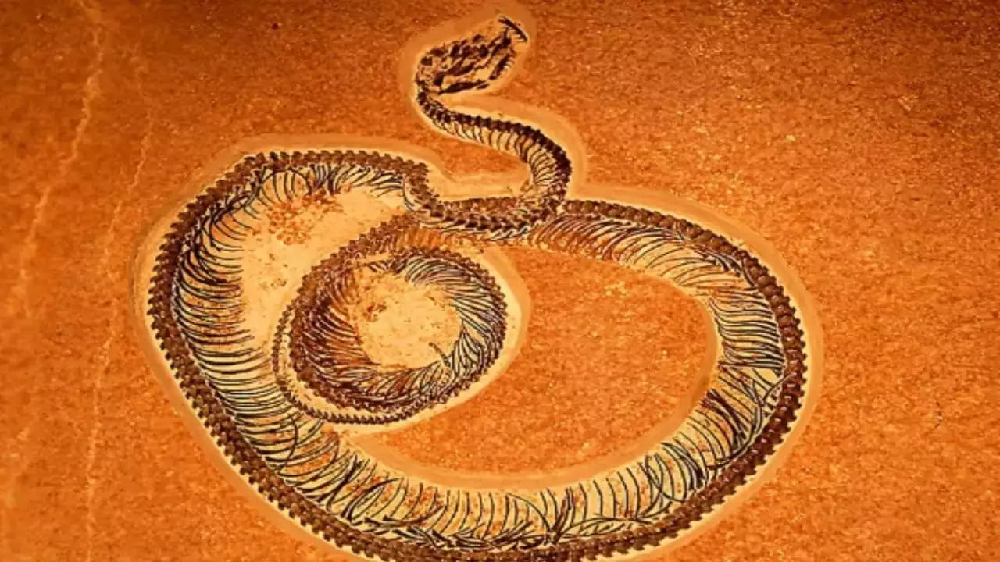
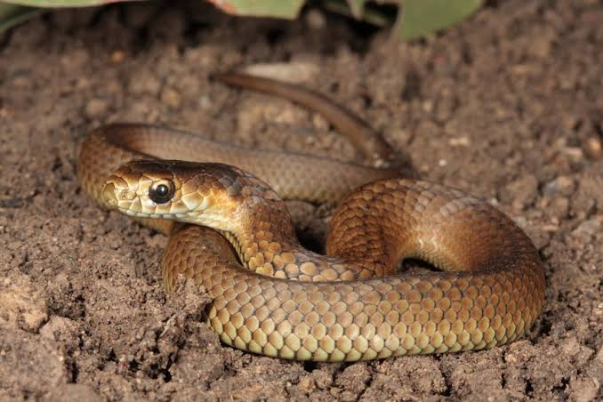

Origin of Snakes
Snakes have a long evolutionary history that dates back over 100 million years. The earliest ancestors of snakes are believed to have evolved from lizards during the late Cretaceous period. Fossil evidence suggests that these early snakes were terrestrial and, over time, adapted to different environments. The development of elongated bodies and the loss of limbs allowed snakes to excel in burrowing, climbing, and swimming, contributing to their survival in diverse habitats. The exact origin of snakes is still debated, but most theories suggest that they arose from burrowing, legless lizards in tropical regions.
Early snakes were likely opportunistic predators, feeding on small mammals, insects, and other creatures. Over millions of years, they diversified into various species with specialized adaptations for their environments. While the origin of snakes remains partially mysterious, scientists agree that their evolutionary journey has resulted in an incredibly diverse group of reptiles capable of thriving in nearly every ecosystem on Earth.



Snakes Fossils
Snake fossils provide valuable insights into the evolutionary journey of these reptiles. The oldest known snake fossils date back to the early Cretaceous period, about 100 million years ago. These fossils reveal that early snakes had small, vestigial limbs, suggesting that they evolved from lizards. One of the most famous fossil discoveries is Najash rionegrina, a snake that lived around 95 million years ago, which had small hind limbs and a pelvis, supporting the theory that snakes lost their legs over time.
Fossils also show the evolution of different snake features, such as jaw flexibility, specialized teeth, and elongated bodies. Over time, snakes evolved to become more specialized in hunting and feeding. Fossils from different periods reveal how species adapted to various environments, from aquatic habitats to deserts and forests. The study of snake fossils not only helps scientists understand snake evolution but also provides a clearer picture of prehistoric ecosystems and the role snakes played in them.


